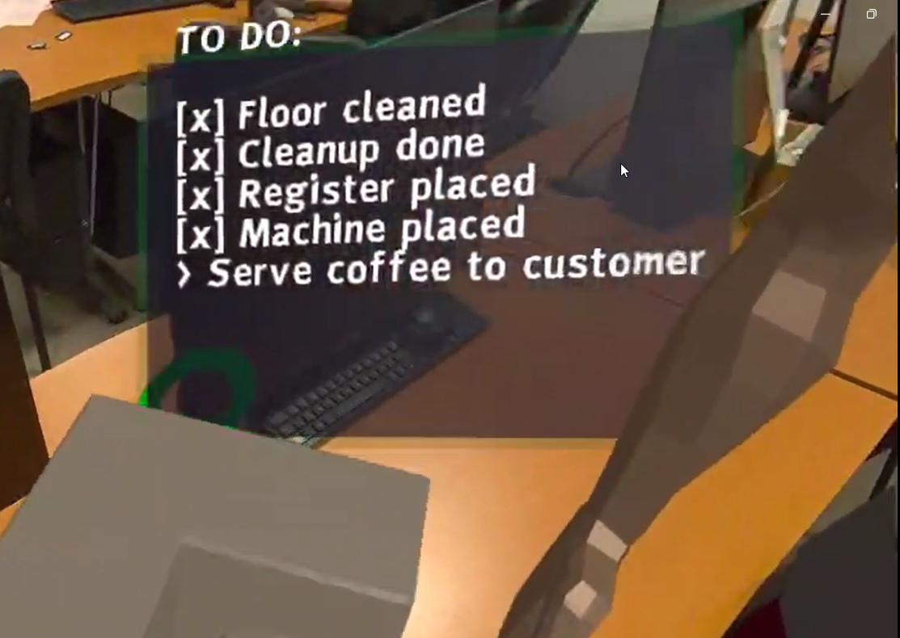

1. Dynamic To-Do List & Tutorial
Creation of an interactive checklist to guide the player. The system dynamically reorders tasks and validates steps (checkup) to ensure a smooth learning process of the mechanics before the real service begins.
// src/main.js
function updateTutorialUI() {
let msg = "TO DO:\n\n";
if (tutorialStep === 1) msg += "> Buy Broom & Dustpan (Menu Y)\n";
else if (tutorialStep > 1) msg += "[x] Floor cleaned\n";
// ...
if (tutorialStep === 5) msg += "> Serve coffee to customer\n";
else if (tutorialStep > 5) msg += "[x] Customer served\n";
tutorialText.setAttribute('value', msg);
if (tutorialStep === 7) startGameMode();
}